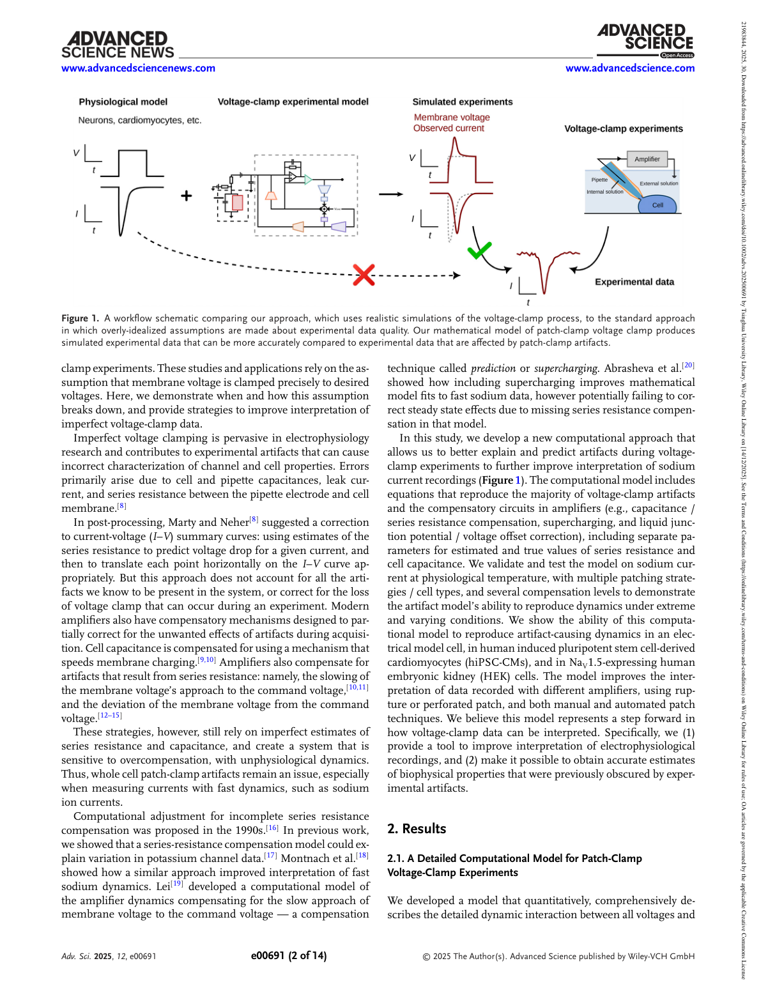
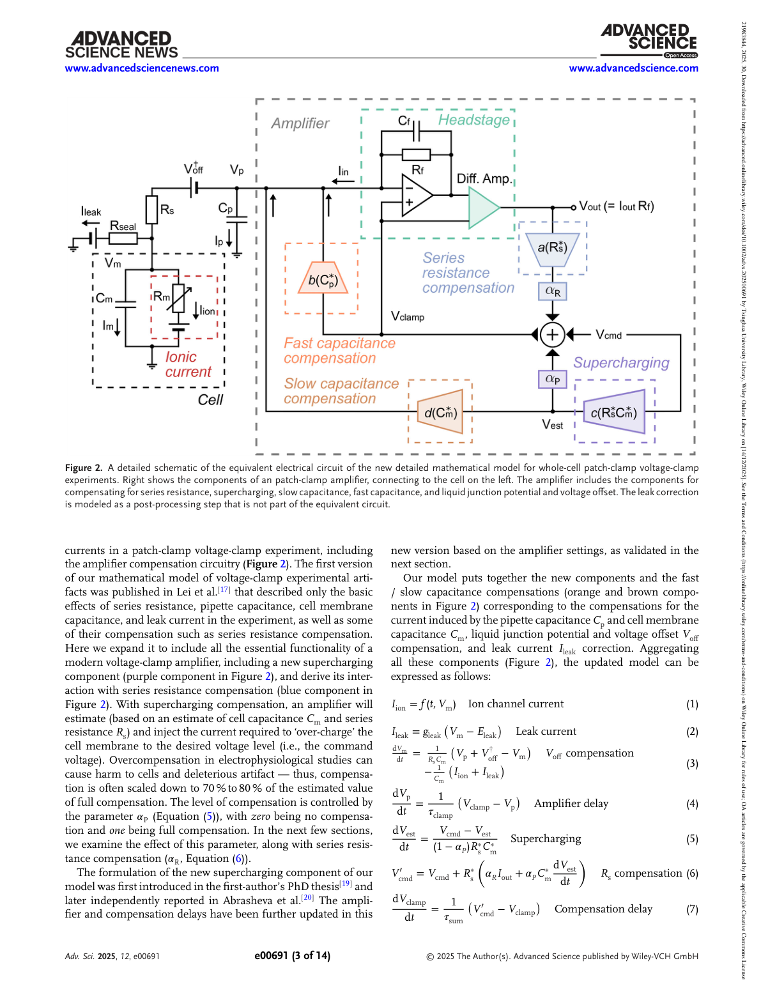
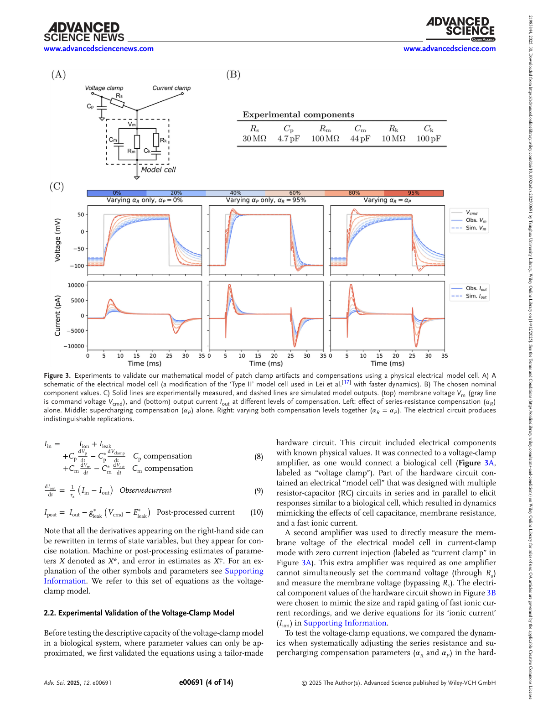
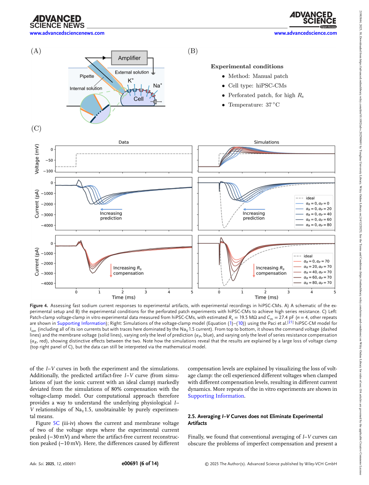
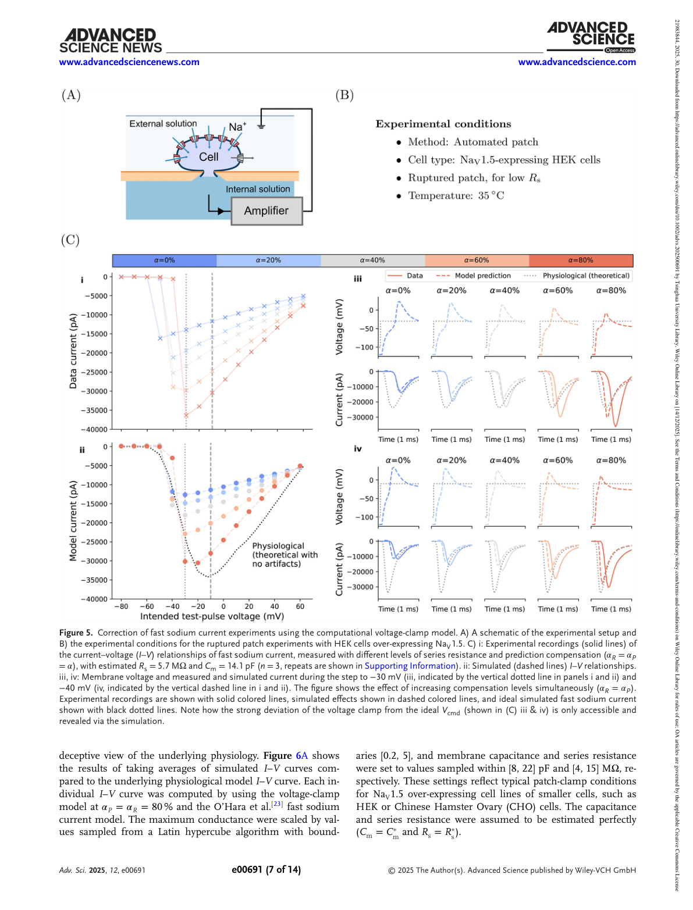
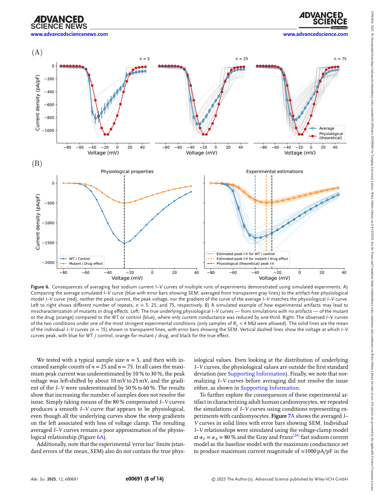
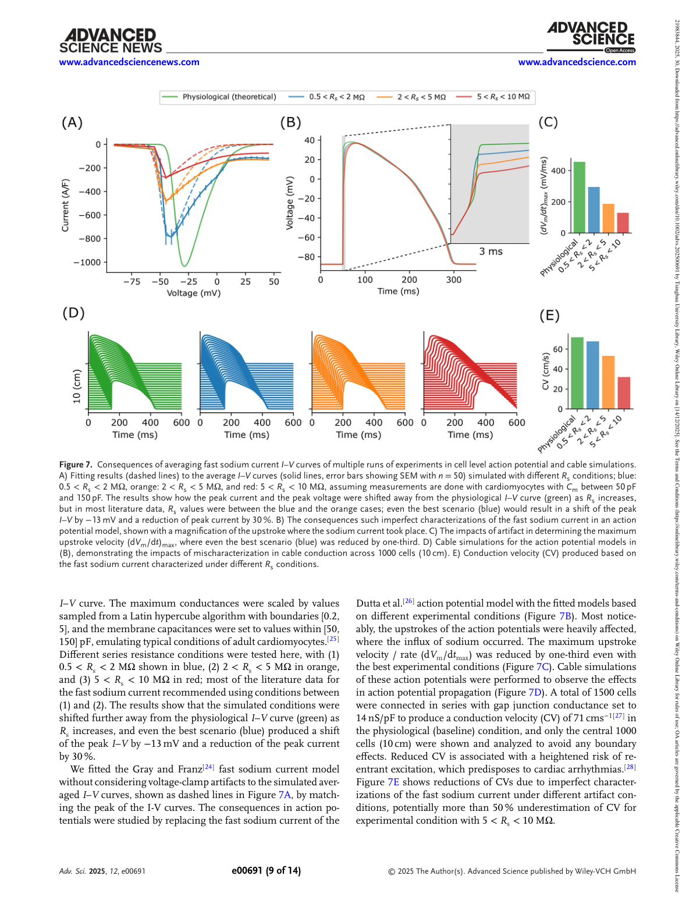
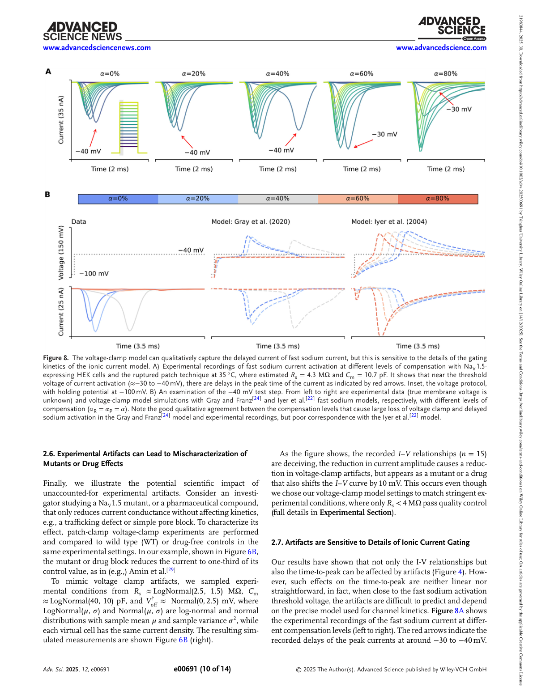

论文精读说明文档
Resolving Artifacts in Voltage-Clamp Experiments with Computational Modeling
用计算模型还原 voltage clamp 真实发生了什么——串联电阻伪迹有多大、为什么增大样本量也消除不了系统性偏差。
论文信息
Advanced Science - 2025 - Lei - Resolving artifacts in voltage-clamp experiments with computational modeling.pdf
一句话定位
这篇论文建立了包含串联电阻（series resistance, Rs）、膜电容（membrane capacitance, Cm）、管电容（pipette capacitance, Cp）和全套放大器补偿电路在内的完整 voltage clamp 等效电路常微分方程模型，用电学模型细胞实验验证准确性，然后以心脏快钠电流（fast sodium current, INa）为例，定量证明：即使做了 80% 的 Rs 补偿，记录到的 I-V 曲线仍会出现峰值低估 10–30%、峰值电压左移 10–25 mV 的系统性偏差，且这一偏差无法通过增大样本量消除。
为什么值得读
Voltage clamp 是离子通道电生理的核心工具，但它有一个根本矛盾：要钳制膜电位就必须通过 pipette 注入电流，而电流流过串联电阻 Rs 会产生压降，导致膜上真实电位偏离命令电压。对慢电流（如延迟整流钾电流），这个误差尚在可接受范围；但对于激活时间常数在 0.1–1 ms 量级的快钠电流，Rs 造成的电压误差与电流瞬态几乎同步发生，来不及被放大器的补偿电路消除，进而扭曲整条 I-V 曲线。更关键的是，论文证明：多细胞取平均这一"领域惯例"不仅不能消除偏差，还会制造系统性错误——其量级与致病突变的门控偏移相当，意味着从有伪迹数据得出的参数估计、药效判断乃至突变致病性结论，都可能被系统性污染。
对罗重威正在推进的 IEEE TIM 差分测量论文而言，这篇文章是重要的方法学参照。你的工作处理的是胞外电位（extracellular potential, Ve）叠加在记录信号上的"加性伪迹"；Lei 处理的是串联电阻导致命令电压控制失效的"控制端伪迹"。两者在同一个实验系统（patch clamp，不同工作模式）上出现，在胞外电刺激（extracellular field stimulation, EFS）条件下同时做 voltage clamp 时会叠加。两篇论文的方法论哲学完全一致：不假设伪迹不存在，而是建立等效电路模型并加以修正。
术语先说明
图文导读








机制横向对照
本文系统比较了不同补偿策略下伪迹的表现，以及计算修正与传统补偿方案的互补关系：
| 方案 | 原理 | 对 INa 的效果 | 主要局限 |
|---|---|---|---|
| 无补偿（α_R = 0） | 直接记录，不做任何 Rs 修正 | I-V 曲线严重左移、峰值低估 >50% | 伪迹最大，不可接受 |
| Rs 补偿（α_R = 80%） | 放大器在命令电压上叠加 α_R·Rs·Iout，部分补偿 Rs 压降 | I-V 左移和峰值低估明显改善，但残余偏差仍达 10–30% | 超过 ~95% 时补偿回路振荡；无法完全消除系统性偏差 |
| 超充电补偿（α_P） | 在电压阶跃时注入额外瞬态电流，加速 Cm 充电 | 改善膜电位建立速度；对快 INa 效果有限 | 大 Rs 下（如穿孔膜片钳）效果不足；可能使 I-V 曲线变形 |
| 计算模型后处理修正（本文） | 建立完整 ODE 等效电路，拟合有伪迹的实验数据，反推真实通道参数 | 可从有伪迹数据中估计出接近无伪迹的 I-V 曲线和动力学参数 | 依赖先验门控动力学模型；模型误差会传播到修正结果（Fig. 8） |
和你的研究怎么接上
1. 两种伪迹、一套等效电路——方法论完全对位
你的 IEEE TIM 论文处理的是"测量端伪迹"：胞外电位 Ve ≠ 0，叠加在放大器读出的信号上，导致测到的 Vm = Vi − Ve 而非真实跨膜电位。Lei 处理的是"控制端伪迹"：Rs ≠ 0，膜上真实 Vm 偏离命令电压 Vcmd。两者都是从等效电路出发、建立数学模型、定量修正伪迹；方法论哲学完全一致，可以在你的论文 Discussion 中并列呈现，构成"patch clamp 系统性伪迹的互补修正框架"。
2. 胞外电刺激条件下两种伪迹叠加
在你做胞外电刺激（EFS）同时记录 voltage clamp 电流的实验中，两种伪迹同时存在且可能相互耦合：Ve 波动改变 bath 中参考电位，Rs 补偿电路会对这个波动做出响应，进而改变注入电流，再通过 Rs 产生额外压降。Lei 的 ODE 模型在原则上只需要在 Vp 项中加入 Ve(t) 即可扩展——这是一个值得关注的后续工作方向：先用你的差分法去除 Ve 的加性叠加，再用 Lei 的模型修正残余 Rs 伪迹，两步串联构成最完整的修正链路。
3. Rs 和 Cm 参数估计的精度问题
你在 TIM 论文中通过 voltage clamp seal test 估计 Rs、Cm 等参数，并将其用于差分测量方案的标定和等效电路分析。传统指数拟合方法隐含假设 Rs 补偿已开启且完美，而 Lei 的 ODE 模型提供了一种不依赖该假设的更精确参数估计方法。开源代码（GitHub）可直接适配到你的神经元/肌肉细胞实验条件，用于验证或改进你现有的参数提取流程。
4. 论文引用策略和叙述框架
建议在你的 TIM 论文 Discussion 中引用 Lei 2025，框架如下：voltage clamp 记录中的伪迹有两个独立来源——串联电阻 Rs 导致膜电位偏离命令电压（Lei et al., Advanced Science, 2025），以及胞外电刺激下 Ve ≠ 0 导致放大器参考电位偏移（本文工作）。两种伪迹在 EFS 条件下叠加，因此最完整的分析流程应同时考虑 Rs 补偿计算修正与 Ve 差分去除。你的差分方法是目前唯一专门处理 EFS 条件下 Ve 叠加问题的方案，在这个更大的"patch clamp 伪迹地图"中占据独特位置。
证据链和局限
- 验证链完整但只用了一种放大器。 电学模型细胞实验使用 MultiClamp 700B；不同品牌放大器（如 Axopatch 200B）的补偿算法实现细节有差异，量化精度可能因设备而异，模型的可移植性需要各自验证。
- 计算修正效果对门控动力学模型敏感（Fig. 8）。 在激活阈值附近，不同 INa 门控模型（Gray & Franz vs Iyer et al.）给出不同的延迟预测；若先验模型不准确，修正结果会继承该误差。
- 未考虑空间钳制（space clamp）不完全问题。 论文隐含假设膜电位空间均匀，适用于球形细胞；有突起的神经元（树突、轴突）中，远端膜电位不等于 soma 电位，Rs 伪迹和 space clamp 误差会叠加，本文模型无法处理。
- 未涉及胞外电刺激条件下的伪迹交互。 本文全程不施加胞外电刺激，Ve 项在模型中为零。Rs 补偿电路对 Ve 波动的响应——可能使伪迹更复杂——不在讨论范围内。
- 高频放大器动态未完全建模。 Bessel 滤波器、采样率限制、模数转换延迟等在微秒时间尺度上的影响尚未纳入模型，对亚毫秒动力学的精确重建可能存在残余误差。
建议阅读顺序
- 先看 Fig. 1（workflow 对比）和 Fig. 2（等效电路），建立全文的物理框架，再对照 Eqs. 1–10 理解各参数的物理含义。
- 读 Fig. 3（电学模型细胞验证），确认模型可信度；重点关注 0–80% 补偿段的吻合程度和 95% 时的振荡现象。
- 跳到 Fig. 6（多细胞平均的系统性后果），这是全文最核心的论点，看懂"偏差为何不随 n 增大而减小"再回头看 Fig. 4–5 会更有感知。
- 读 Fig. 4–5（真实细胞实验），对照 Fig. 6 理解伪迹在不同 Rs 和制备条件下的量级差异。
- 最后读 Fig. 7–8，分别理解下游功能影响和模型局限性，为判断计算修正的适用边界提供依据。